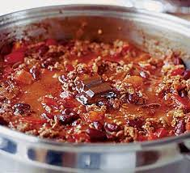

Chilli con carne

Description:
Chilli con carne is one of my favorite dishes. It's very easy to make and this recipe will guide you step by step.
Ingredients:
- 1 large onion
- 1 red pepper
- 2 garlic cloves
- 1 tbsp oil
- 1 heaped tsp hot chilli powder (or 1 level tbsp if you only have mild)
- 1 tsp paprika
- 1 tsp ground cumin
- 500g lean minced beef
- 1 beef stock cube
- 400g can chopped tomatoes
- ½ tsp dried marjoram
- 1 tsp sugar (or add a thumbnail-sized piece of dark chocolate along with the beans instead, see tip)
- 2 tbsp tomato purée
- 410g can red kidney beans
- plain boiled long grain rice, to serve
Steps:
- Fry onions
- Add meat
- Brown meat
- Add everything else
- Enjoy!